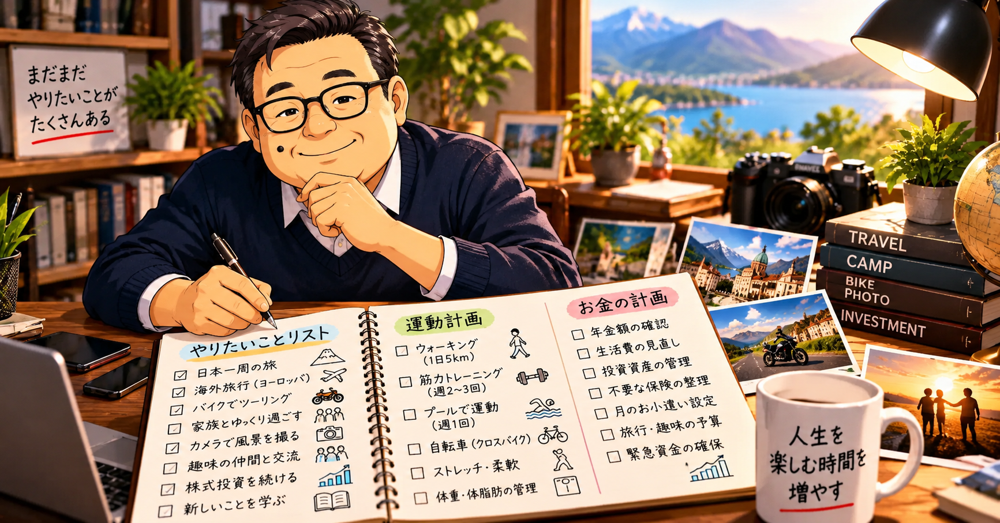
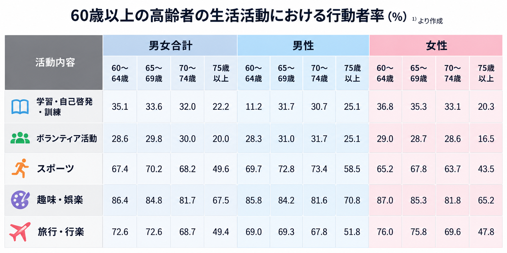
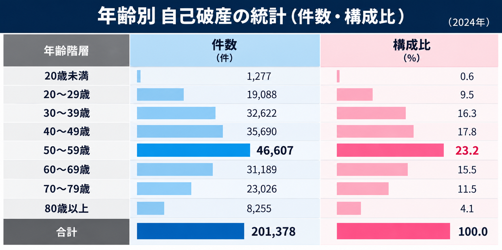

40代・50代で検討してほしい、早期退職（FIRE）・自分のための人生設計

人生のためにお金を貯めるのであって、お金を貯めるために人生があるのではありません。早期退職をするかどうかにかかわらず、40代・50代のうちから「自分はどう生きたいのか」を考えてみませんか。
第1章 60代を前に、私が考えたこと
私の人生は、人と比べること、人に勝つことを追い求めてきたように思います。サラリーマン人生でも、ひたすら貯金を増やすことや、地位を上げることばかり考えていました。
休日も楽しむ時間というより、月曜日から始まる業務の準備に充てていました。その裏では、「上司の評価が良くない」「あの人より給料が少ない」など、他人からの評価や他人との比較に一喜一憂していました。口では強がって見せても、実際には他人からの評価や比較に振り回されていたのです。
サラリーマン生活が理不尽と思えた日
ある日、会社の製品に問題が発生し、お客様に緊急で状況を説明し、謝罪する必要が生じました。お客様には状況を説明して丁寧な対応を心掛けましたが、海外のサポート部門からは「業務時間が終わったので対応する必要はない」との回答がありました。
お客様を待たせたまま、私は製品知識が十分でない状態で何とか対応を進め、冷や汗を流しました。日頃、無理をお願いして製品を購入していただいているお客様に対し、障害が発生した途端に「営業時間外だから対応できない」とすることに、現場としていたたまれなさを感じました。
この出来事は、サラリーマンとしての理不尽さを強く感じた瞬間でした。
会社は組織として合理的な判断をします。しかし、その合理性が、必ずしも現場で働く個人の幸せにつながるとは限りません。私はこの頃から、自分の人生を会社に預け続けてよいのか、疑問を持つようになりました。
FIREという考え方
そのころ、友人に教えられたことをきっかけに、「お金に働いてもらう」という考え方を意識し始めました。調べていくうちに、FIREやサイドFIREという生き方があることを知りました。
金融資産を育て、不必要な出費を減らし、生涯の生活設計に目途を立てたうえで、自分のやりたいことに時間を使っていく。足りない分は副業などで補う。給料が下がっても、自分に合った生活を手に入れるという考え方です。
もっと早く考えれば良かった：早期退職
私も含め、多くの日本人は「お金や出世」「良い家族」「老後に向けた貯金」といった理想像に向けて、コツコツ努力することが多いように思います。その一方で、旅行や趣味に時間やお金を使って楽しむことは、少し苦手なのかもしれません。
男性の平均寿命を約80歳と考えると、65歳まで働いた場合、残りの時間は単純計算で15年です。しかも、元気に活動できる期間はそれより短いかもしれません。本気で自分のやりたいことをいつ実現するのか考えておかないと、貯金を増やすだけで、自分の楽しみの時間が少ない人生になってしまいます。
健康寿命を延ばすこと、お金の有効な使い方、無駄の省き方など、老後を見据えた計画は早く始めるほど選択肢が広がります。私は、40代あたりから考え始めるのが一つの良いタイミングではないかと思っています。
第2章 自分の人生を楽しむのが苦手な日本人
頑張る日本人・でも楽しむことが苦手な日本人
日本の典型的な人生は、次のようなものではないでしょうか。
- 勉強して、就職して、仕事で家族を養う。
- 家を購入して、子どもを良い学校に通わせる。
- 老後に困らないよう、貯金をする。
私も、暇な時間があれば仕事の残務を考え、旅行に行く時間があれば仕事をして貯蓄に回そうとしていました。休日も、もうひと踏ん張りという気持ちでした。
本人の働く目的
「お金を得るために」62.9%
「自分の生きがいのために」13.3%
出典：厚生労働省（本文で引用した数値）
60歳を前にして、初めて自分の人生について考えた
これまで、「人に迷惑をかけないように」「楽しみは後にとっておいて、老後のために貯金しなさい」と教えられ、その瞬間を楽しむことをずっと我慢してきました。
60歳を過ぎると、残された人生は全体の2〜3割ほどになるかもしれません。「残された自分の時間」「老後の財産との折り合い」「自分の幸せな過ごし方」を考えなければなりません。
闇雲に貯金の残高を増やすのではなく、ここで初めて、自分自身の人生設計を考えるようになりました。
第3章 受け入れなければならない現実
自分の老後について深く考えるようになり、もっと早く考えるべきだったと後悔したことがいくつかあります。やりたいこと、挑戦したいことは思いつきます。旅行、バイク、趣味を通じた交流。しかし、寿命を80歳と考えても、残りの時間をすべて自由に使えるわけではありません。
楽しみたいことをできる時間は、寿命ほど長くない
私たちは人生の残り時間を寿命で考えがちです。しかし、本当に考えなければならないのは、自分の好きなことを、自分の体で楽しめる時間があとどれくらい残っているかということです。
最近、交流を始めたグループには70代や80代の方々が多くいらっしゃいます。足腰が弱くなり、杖をついて歩いている方も少なくありません。年齢とともに生活活動がどのように変化するのか、調べてみました。

スポーツの行動者率は、60〜64歳の67.4%に対し、75歳以上では49.6%となっています。旅行・行楽も、60〜64歳の72.6%から75歳以上では49.4%に減少しています。
背景として、次のようなことが考えられます。
- 加齢による筋力低下や、膝・腰の痛み。
- 心肺機能の低下により、移動そのものが大きな疲労の原因になる。
- 旅先やスポーツ中に「持病が悪化したら」「骨折したら」という不安が生じる。
歳を重ねるほど、時間が早く過ぎる現実
以前に比べて、40代や50代では1年があっという間に過ぎると感じます。「もう誕生日が来てしまった」と思うことも増えました。
この感覚に関連して、「ジャネの法則」と呼ばれる考え方があります。年齢を重ねるほど、人生全体に対する1年の割合が小さくなり、主観的に時間が短く感じられるという説明です。
年齢による、時間の経過速度の加速
60歳の人にとって1年は人生の60分の1、6歳の人にとっては6分の1にあたり、主観的に感じる年月の長さは年齢とともに短くなる、という考え方です。
実は生涯で、多くの財産を使いきれないまま
将来や老後に向けて、貯金や投資信託の積立を頑張る一方で、多くの財産を使いきれないまま人生を終えるケースもあります。
日本国内の一般的な相続における財産額（本文で参照した推計）
平均値：約2,000万〜3,000万円
中央値：約1,500万〜1,600万円
参考として本文で挙げた資料：三菱UFJ信託銀行、MUFG資産形成研究所
ただし、相続財産額は調査対象や集計方法によって大きく異なります。ここで示した金額は一律の標準値ではなく、参照した資料・調査条件を確認したうえで読む必要があります。
その年齢でしか経験できないこともある
20代の頃、100万円あったら買いたいもの、やりたいことは色々ありました。おしゃれやモータースポーツなど、たくさん我慢してきました。今なら、100万円は少し優雅な旅行に使うかもしれません。
同じ100万円でも、20代と70代では得られる経験や価値が違うように思います。
20代の100万円：「自分を拡張するためのエネルギー」
荒削りで過酷な経験であっても、その後の人生の選択肢を広げ、何十年も記憶に残る経験につながるかもしれません。貯金ばかりしてこの時期の経験を逃すことは、大きな機会損失になり得ます。
70代以降の100万円：「人生を満足して締めくくるためのピース」
体力があるうちに、快適さも味方につけながら、これまでの人生を肯定できるような経験に使う。お金を残すことだけでなく、使う価値も考えたいと思います。
裕福でも起こる老後破綻
逆に、一定の財産がある家庭でも、家計の状況によっては老後に行き詰まることがあります。自己破産を申し立てた人の年齢構成について、本文で参照した2024年の資料では、50代が23.2%を占めています。60代は15.5%、70代は11.5%です。

図の構成比では、50代が23.2%、60〜69歳が15.5%、70〜79歳が11.5%、80歳以上が4.1%です。これらを合計すると、50代以上は54.3%となります。自己破産の件数や構成比は年によって変化するため、単年の数字だけで老後破綻のリスク全体を判断することはできません。
裕福でも老後の破産を起こす理由
老後の家計が行き詰まる背景には、次のような要因が考えられます。
- 退職などによる収入の減少
- 現役時代の生活水準を維持してしまう
- 医療費・介護費用の増加
- 住宅ローンや教育費などの負担
- 投資資産の取り崩しが想定どおりに進まない
- 病気や住宅修繕など、想定外の支出
第4章 定年を迎える前に準備しておきたいこと
これまで述べてきたように、老後の豊かな人生を考えるうえでは、（1）健康で活動できる時間を延ばすこと、（2）収入と支出の計画を立てること、この2点が重要だと思います。
健康寿命を延ばすための生活習慣
前章で説明したとおり、好きなことや活動的なことができる期間は、寿命より短くなる可能性があります。筋力や心肺機能の低下は、その一因です。早めに対策を始めることで、活動できる期間を保つことにつながります。
よく挙げられるのは、運動・食生活・睡眠です。大切なのは、特別なことを一時的に頑張るより、無理なく続けられる習慣を早くから作ることだと思います。
40代・50代から始めたい、健康寿命を意識した行動
- ウォーキングなど、日常的に体を動かす。
- 筋力トレーニングを取り入れ、筋肉を維持する。
- 食事のバランスを整え、体重や血圧などを定期的に確認する。
- 睡眠時間を確保し、生活リズムを整える。
- 健康診断を受け、気になる数値を放置しない。
筋肉量や認知機能、生活習慣病のリスクには個人差があります。年齢だけで一律に決まるものではありません。体調や持病に応じて、医療専門職にも相談しながら取り組むことが大切です。
老後を意識したお金の守り方・使い方
私は、ねんきんネットで将来の年金額を色々とシミュレーションするようになりました。家族の支出額と内訳を家計簿サービスで可視化し、生活費を見直しました。ミニマリストなどの発信も参考にしながら、不要な支出を整理し、毎月のお小遣いも決めました。
健康保険や死亡保険なども、自分に必要な保障内容を考え直しました。残りの人生でどの程度のお金が必要なのか、少しずつ見通しを立てられるようになりました。
「定年後」のリアルな収支の可視化
ねんきん定期便やねんきんネット、企業年金の試算を使い、定年後の手取り収入を把握する。その収入を基準に、暮らし方をシミュレーションします。
固定費の見直しと削減
サブスクリプション、携帯料金、保険などを確認し、削ってもストレスの少ない固定費を現役時代に見直しておきます。保険は家族構成や必要な保障を確認して判断します。
支出計画と副業プラン
年間の支払いを明確にし、収入だけでは不足する部分があれば、働き方や副業などで補う方法を検討します。
第5章 もっと早く動けば良かった
私は60歳を前にして、初めて自分の人生について真剣に考えました。
それまでは、収入を増やすこと、貯蓄を増やすこと、会社で評価されることに多くの時間を費やしてきました。
もちろん、それらが無駄だったとは思いません。家族を養い、生活を守り、将来に備えることは大切なことです。
しかし、振り返ってみると、もう少し自分のために時間やお金を使っても良かったのではないかと思います。
もっと早く旅行に出かけても良かった。
もっと早く趣味を始めても良かった。
もっと早く健康について考えても良かった。
そして、もっと早く、自分の人生をどう過ごしたいのか考えておけば良かったと思います。
FIREという言葉を聞くと、十分な資産を築いて仕事を辞めることを想像するかもしれません。しかし、私はFIREの本当の価値は、仕事を辞めることだけではないと思っています。
早期退職を検討することで、自分に必要な生活費を知ることができます。将来必要な資産額を考えるようになります。健康を維持することの重要性にも気付き、自分が本当にやりたいことは何なのかを考えるようになります。
仮に早期退職を選ばなかったとしても、こうした人生設計は決して無駄にはなりません。
大切なのは、「他人からどう見られるかではなく、自分がどう生きたいか」だと考えを改めることができました。
お金を増やすことだけに人生を費やすのではなく、お金を使って人生を楽しむことも考える。仕事での地位や周囲からの評価だけでなく、自分が自由に使える時間を大切にする。そして、長く自分の好きなことを楽しめるように、健康にも投資する。
だからこそ、40代、50代のうちから、一度は早期退職という選択肢を真剣に検討してみてほしいと思います。退職するかどうかは、その後に決めればよいのです。
トップページへ戻る